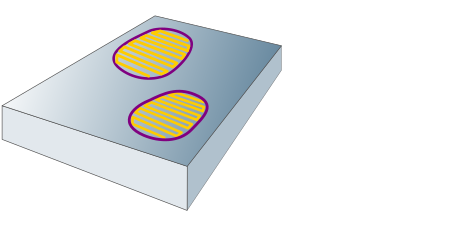
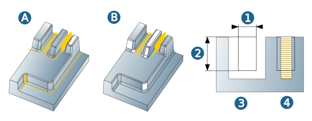

Boundary
One or more boundaries are permissible, and they may overlap for the purpose of area delimitation; however, they may not be nested several times. The defined tool reference applies to all machining boundaries.
Ist keine Boundary definiert, so werden als Bearbeitungsgrenzen die Bauteilgrenzen mit einem intern festgelegten Aufmaß benutzt. An den Grenzen kann die Gefahr bestehen, dass das Werkzeug abkippt.
If necessary, define the start of machining by specifying Plunge points that must be free of collisions. The start position is determined based on the macro and the machining direction is specified by the plunge points.
|  |
Tool reference
The options To (1), On (2), Past (3) are available as the tool reference.
 |
Plunge points: User-defined plunge points are also available for High Performance Mode .
Requirements: A corresponding hole must be present in the stock for the plunge point used.
The distance between the plunge point and the model wall must also correspond to at least 2x tool diameter. If plunge is possible at the defined point, the plunge point is approached directly without a macro. If plunge is not possible at the defined point, machining is carried out without a plunge point. If approach from the outside is possible, the plunge point may perhaps not be used.
Specify the pilot hole diameter with the drill diameter . The value must be at least 1.25* tool diameter and 1.1* tool diameter + 4* stock tolerance.
Specify the pilot hole angle with the hole angle.This corresponds to the tip angle of the tool being used.
Residual stock
Use groove limit: limiting the machining area to grooves. A) Option is disabled. B) Option is enabled.
Search width (1): areas narrower than the specified search width are machined. Min. groove depth (2): areas lower than the specified groove depth are machined. 3) groove is not machined. 4) groove is machined.
|  |